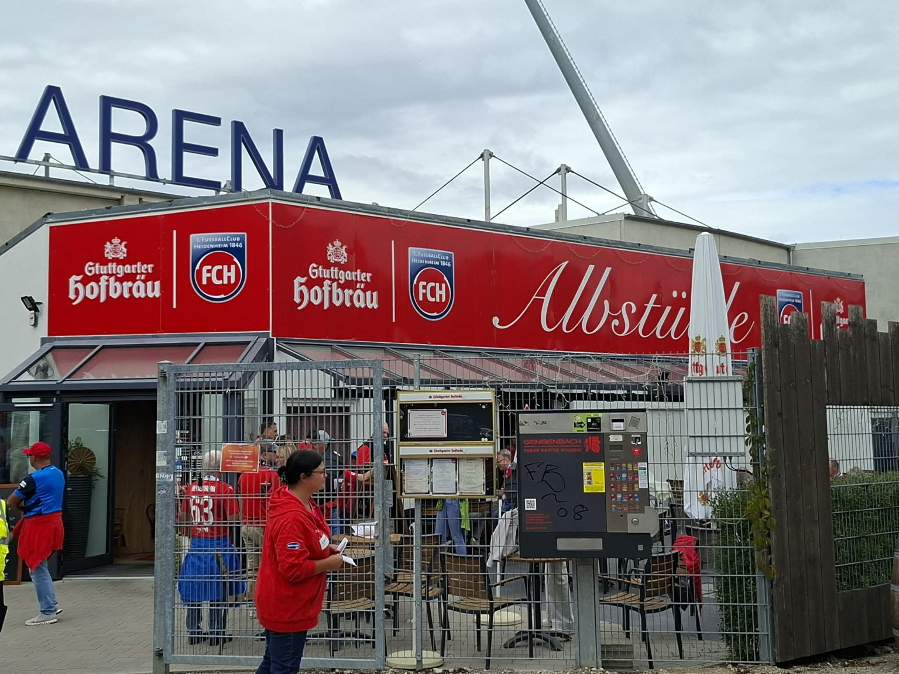
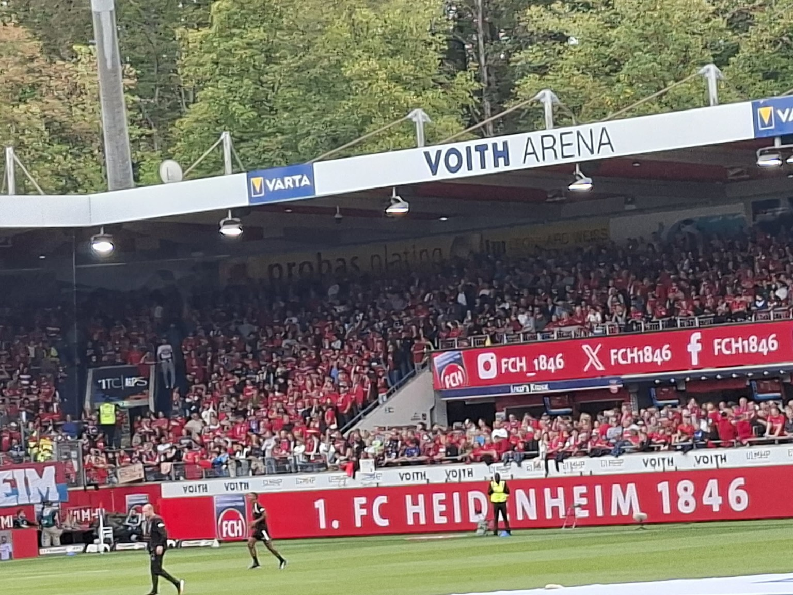
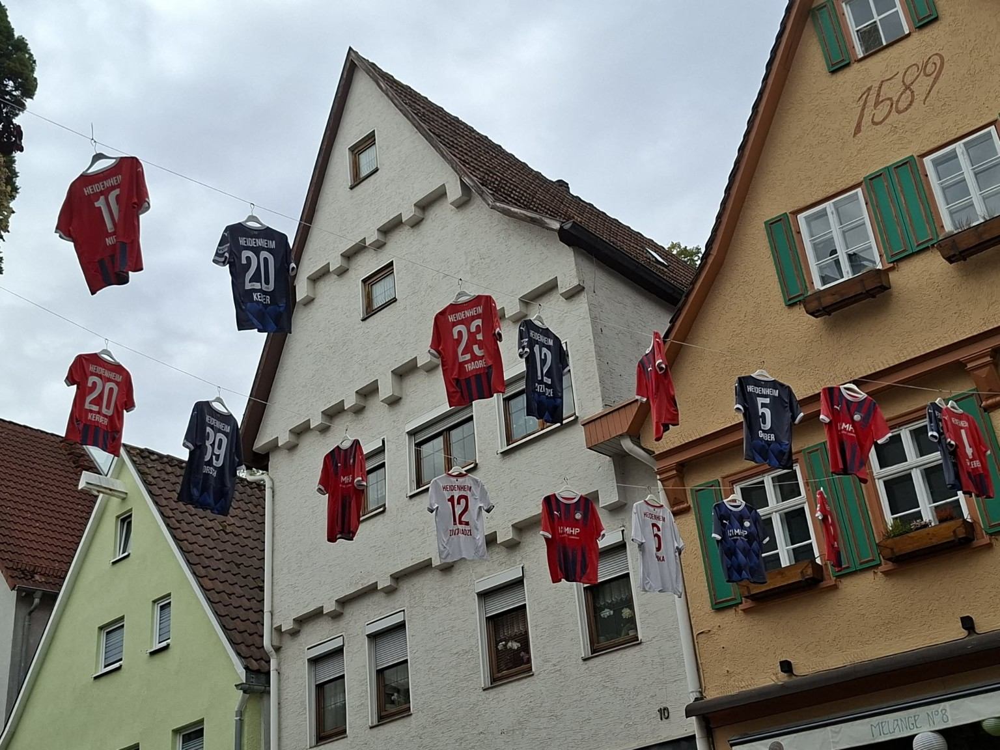
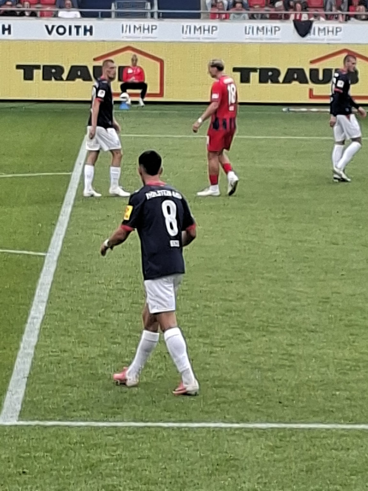
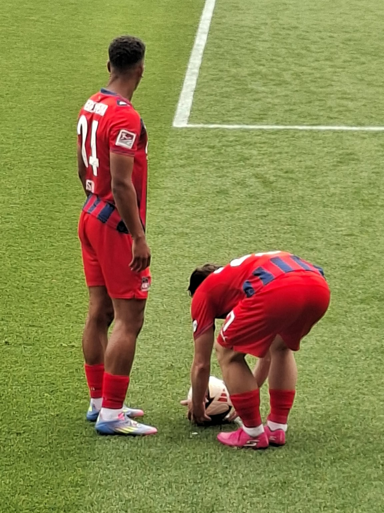
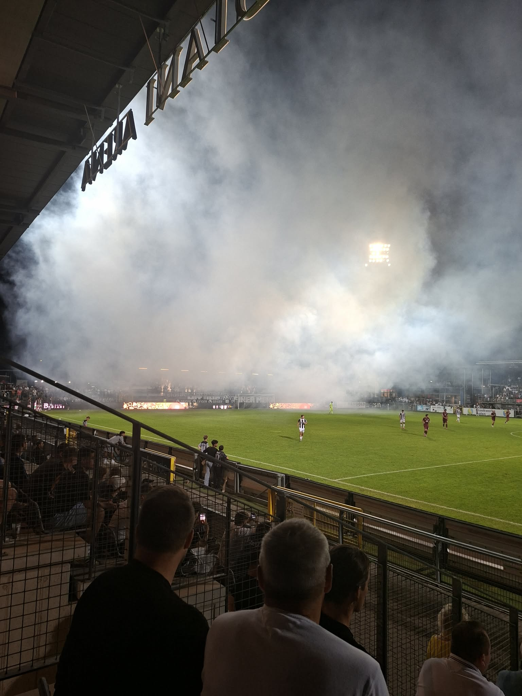
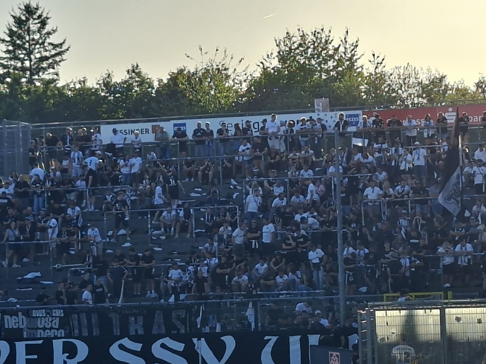
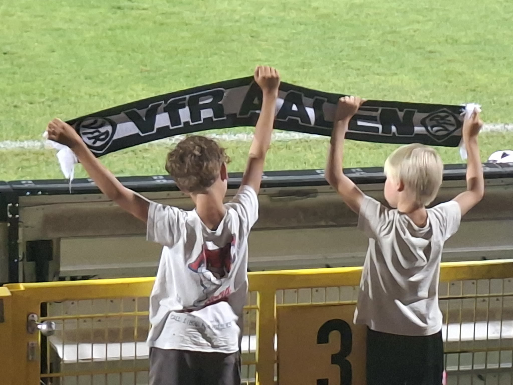

Agency Updates
Player Transfers & Football Stories
We proudly welcome another talented young football player to our international agency.
One of our players successfully completed a transfer to a European professional club.
Several agency players impressed during national and international competitions.
13 September 2026 • Voith-Arena • Heidenheim, Germany
Constantin Wunder, international football agent and co-founder of Argentina Sport Stars, attended the recent match between 1. FC Heidenheim and Holstein Kiel at the Voith-Arena.
The match provided an opportunity to experience German professional football directly from the stadium and to follow the atmosphere surrounding a competitive league fixture.
Heidenheim secured a 1:0 home victory. After a goalless first half, the decisive moment came late in the match when Jonas Föhrenbach scored in the 84th minute following a corner.
For Argentina Sport Stars, attending professional football matches is an important part of maintaining international football connections, observing the football environment and building relationships within the European football market.
Matchday visits also provide valuable opportunities to stay connected with the professional football environment and to follow developments across European leagues.
Matchday atmosphere at the Voith-Arena.
Another view from the matchday.
Another view from the matchday.





A Matchday in the Heart of German Football
Constantin Wunder, international football agent and co-founder of Argentina Sport Stars, attended the Regionalliga Südwest clash between VfR Aalen and SSV Ulm 1846 in Aalen, Germany.
The evening brought together two traditional clubs in an intense regional derby, with the atmosphere around the Bediani-Arena reflecting the passion and character of German football. With thousands of supporters in attendance, the match offered a strong example of the energy, commitment and competitive spirit that define football at this level.
For Argentina Sport Stars, attending live matches is an important part of maintaining strong international football connections. Being present at stadiums allows our team to experience the football environment first-hand, follow players and clubs closely, and continue developing relationships within the international football network.
From the build-up to kick-off, the Bediani-Arena was filled with the atmosphere of a genuine regional derby. A total of 4,821 spectators attended the match, creating an impressive setting for the evening.
VfR Aalen opened the scoring in the 37th minute. Dean Melo found the net to give the home side a 1–0 advantage before the break.
Ulm continued to look for a way back into the match after the interval, but Aalen remained dangerous on the counter. In the 84th minute, Dean Melo scored his second goal of the evening to make it 2–0 and secure the home victory.
For Argentina Sport Stars, matchdays are about more than the final score. They are opportunities to stay connected with clubs, players, coaches and football professionals, while continuing to observe the game from inside the football environment.
A selection of moments captured around the stadium and during the match.



Watch moments from the Aalen vs. Ulm matchday experience.
Every match tells a story. Every stadium brings new connections. And every meeting within the football community can become the beginning of a new opportunity.
Argentina Sport Stars continues to build its international network through direct contact with the football world — one matchday, one relationship and one opportunity at a time.
Professional training sessions led by experienced football coaches.
Our network connects talented players with clubs around the world.
Building strong relationships with clubs, academies and football organizations.
Stay updated with the latest transfers, achievements and agency news from Argentina Sport Stars.
CONTACT US